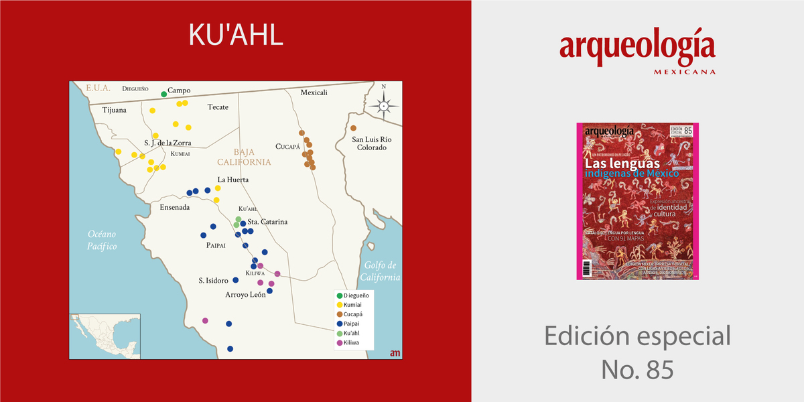
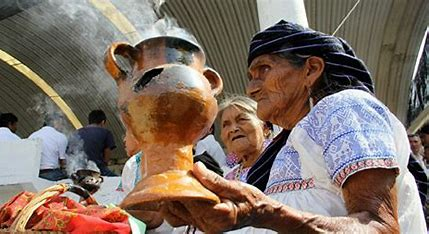

Teresa y Daría Armenda, tía y sobrina, son las últimas dos hablantes de ku’ahl, quienes se rehusan a que la lengua quede en el olvido y realizan grandes esfuerzos para lograr su preservación. Para ello, crearon el Museo Ku’ahl.

Hasta el momento se desconoce si existen más personas que hablen la lengua en riesgo de extinción. Por lo cual, si el día de hoy murieran ambas mujeres el legado cultural y lingüístico de su lengua también desaparecería.
| Imagen | Precio | Audio |
|---|---|---|
|  | $250 | |

|
$350 | |
|  | $150 |
Para financiar los gastos del museo, Daría se dedica a la venta de alfarería hecha por sus propias manos. Actualmente el riesgo de la desaparición de la lengua está oficializado, ya que los censos gubernamentales registran a los ku’ahl junto a los pai pai.